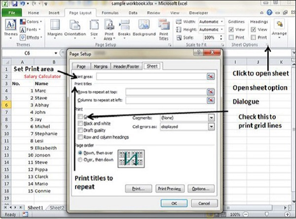

MS Excel provides various sheet options for printing purpose like generally cell gridlines aren’t printed. If you want your printout to include the gridlines, Choose Page Layout » Sheet Options group » Gridlines » Check Print.

Print Area − You can set the print area with this option.
Print Titles − You can set titles to appear at the top for rows and at the left for columns.
Print −
Gridlines − Gridlines to appear while printing worksheet.
Black & White − Select this check box to have your color printer print the chart in black and white.
Draft quality − Select this check box to print the chart using your printer’s draft-quality setting.
Rows & Column Heading − Select this check box to have rows and column heading to print.
Page Order −
Down, then Over − It prints the down pages first and then the right pages.
Over, then Down − It prints right pages first and then comes to print the down pages.